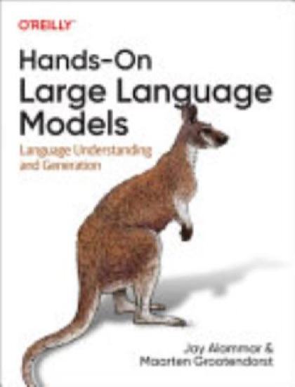

Writing / Book review
Hands-On Large Language Models: Visualizing the Application Landscape
A public-materials review of Jay Alammar and Maarten Grootendorst's illustrated, code-oriented tour through embeddings, classification, clustering, search, and generative models.

- Book
- Hands-On Large Language Models
- Author
- Jay Alammar and Maarten Grootendorst
- Publisher
- O'Reilly Media, 2024
- ISBN
- 9781098150969
- Assessment
- ★★★★½ 4.5/5
provisional, based on public materials
VerdictA broad, visual introduction to language-model applications and representation techniques. Its appeal is the combination of diagrams and practical workflows, while production rigor and mathematical depth call for additional resources.
This review is based on the publisher's public description and table of contents, available sample material, and the official companion materials that can be checked publicly. It does not claim that Shivam personally read the complete book. The assessment focuses on its documented coverage and the kinds of questions that coverage can help a reader explore; it does not treat the existence of a notebook or diagram as proof that every workflow is production-ready.
Jay Alammar and Maarten Grootendorst's Hands-On Large Language Models is positioned as a visual and practical introduction to modern language-model concepts. The O'Reilly listing describes roughly 300 figures, a substantial visual element that is central to the book's identity. The documented scope ranges across language representations, classification, clustering and topic modeling, generative models, semantic search, and retrieval-oriented applications. This breadth is useful for readers who want a map of the application landscape rather than a single narrow implementation recipe.
A useful organizing distinction
One of the book's practical organizing ideas is that language models can be used to create representations of text as well as to generate text. Representation-oriented models turn input into vectors or task-specific outputs that support classification, similarity, clustering, and retrieval. Generative models produce sequences, which may be useful for dialogue, summaries, or transformations. These capabilities overlap in modern systems, but the distinction helps identify what a task actually needs.
This distinction is not an absolute taxonomy of all models. Encoder models can be adapted for many purposes; generative models can produce embeddings or classifications under some methods; and hybrid systems can combine both. It is a decision aid: when a task asks “which category is this?” a classifier may be more appropriate than open-ended generation, while a flexible response may genuinely require a generative model. The right design should be driven by the output contract, latency, risk, and evaluation requirements.
The book's illustrated approach can make those abstractions easier to discuss. A diagram of a vector space or transformer does not itself explain the full mathematics, but it can give a reader a visual anchor before encountering code or equations. The companion code provides a route from visual intuition to experimentation. These are complementary teaching tools: diagrams organize a concept; code tests whether the reader can operationalize it.
Embeddings are useful but not semantic guarantees
An embedding is a vector representation produced by a model. Similarity search ranks items according to a chosen distance or similarity measure. In practical terms, nearby vectors can indicate that a model represents pieces of text as related in some learned sense. They do not guarantee that two passages are logically equivalent, share the same intent, or are safe to substitute for one another.
That limitation is critical in systems that use similarity for caching, deduplication, recommendation, or retrieval. “Cancel my order” and “do not cancel my order” may be lexically and topically close while requiring opposite actions. A threshold that works on one domain may fail on another. Embeddings can help find candidate matches, but the application still needs task-aware checks, evaluation, and a policy for uncertain matches.
A robust evaluation set should include near-matches that differ in negation, entities, time, quantities, or user intent. Measure both useful retrieval and harmful confusions. The retrieval cutoff is not a universal model property: it depends on the embedding model, corpus, normalization, distance function, and use case. A semantic similarity score is evidence for candidate selection, not a truth score.
Classification and clustering answer different questions
Classification assigns examples to a defined set of labels, often using labeled examples during training. Clustering groups examples according to a similarity structure without requiring the same predefined label set. Topic modeling attempts to summarize recurring themes across a corpus, and methods can combine embedding spaces with clustering and representations of characteristic terms. These tasks can all be useful in text analysis, but their outputs are not interchangeable.
A classification model can be evaluated against labeled cases, with metrics selected for class balance and error costs. A cluster has no automatic ground-truth meaning; it needs inspection for coherence, stability, and usefulness. A topic label generated by a language model may be readable yet fail to represent the examples consistently. Analysts should inspect representative and boundary documents rather than judging a cluster by a polished label alone.
The BERTopic pipeline
The book's documented topic-modeling material includes a BERTopic-style pipeline. The key sequence is embedding documents, reducing dimensionality with UMAP, clustering with HDBSCAN, and using class-based TF-IDF (c-TF-IDF) to identify terms that characterize clusters. An optional language model can be used to make labels more readable, but label generation is an additional interpretive step, not the foundation of the clusters.
Each stage contributes assumptions. The embedding model shapes what similarity means. UMAP projects vectors into a lower-dimensional space and can affect local and global relationships. HDBSCAN groups regions with density structure and may leave some points unassigned. c-TF-IDF highlights terms that distinguish a cluster relative to the rest of the corpus. As a result, changes in preprocessing, embeddings, or parameters can change the discovered topics.
The pipeline is not a magic automatic interpretation engine. Analysts should test robustness across parameter choices, inspect documents assigned to each topic, investigate outliers, and compare results against domain knowledge. Topic labels are hypotheses about a corpus. If labels are used in downstream business decisions, a human review and documented acceptance criteria are appropriate. A visually compelling plot can hide instability or an unhelpful clustering objective.
Search and retrieval-augmented generation
Semantic search uses representations to retrieve relevant candidates. A retrieval-augmented generation (RAG) application adds a generative model that uses retrieved material as context. The broad pattern is easy to draw, but a useful implementation depends on document preparation, chunk boundaries, metadata, access control, query formulation, ranking, and answer evaluation.
A RAG system can fail even if its language model is capable. The relevant passage may never be indexed, chunked in a useful way, or returned near the top. A document can be outdated or unauthorized for a user. A generator can ignore relevant passages or assert more than those passages support. Therefore, evaluation should separate retrieval quality from answer quality. Examine whether evidence was found, whether it was relevant, and whether the final response stayed within it.
The book's practical coverage is a useful introduction to these components, but readers should not interpret a demonstrated pipeline as a universal architecture. Different domains need different security, freshness, citation, and abstention requirements. Retrieval is not a guarantee against hallucination, and adding an index does not automatically make answers grounded.
What the visual and practical approach does well
The publisher's emphasis on hundreds of figures suggests a strong commitment to visual explanation, an appropriate fit for concepts such as vector representations and model pipelines. Alammar's public educational work is known for visual treatments of machine-learning ideas, while Grootendorst's work on BERTopic gives the topic-modeling material relevant implementation context. Here those observations describe the authors' public work and the book's positioning, not a substitute for reading the book in full.
The broad scope can help readers place different techniques within one application landscape. Rather than treating “LLM” as a synonym for chat, readers can see classification, clustering, search, and generation as separate ways to use learned representations. Practical code can also turn an attractive illustration into an experiment, helping readers test assumptions with their own data.
A further strength is the potential to serve different starting points. A software practitioner can focus on how components fit into an application. An analyst can examine clustering and topic-model workflows. An ML learner can use the diagrams as a bridge to more detailed study. This flexibility is a benefit, though it means some subjects may receive a survey-level rather than specialist treatment.
Limitations and what it will not teach
An intuition-first, visual approach is not the same as mathematical depth. Readers who want derivations of attention, optimization, or embedding objectives should pair this book with more technical resources. Those who want to construct and train a GPT-style model component by component can use Sebastian Raschka's Build a Large Language Model (From Scratch). Readers focused on application evaluation, serving trade-offs, and foundation-model system design may want Chip Huyen's AI Engineering as a companion.
The scope also cannot replace production engineering. A notebook that demonstrates embeddings or RAG does not settle latency budgets, index refresh policies, observability, access control, privacy, evaluation at scale, or rollback. Production behavior depends on the corpus and user population. The right chunk size, retrieval method, and reranking strategy must be measured; a code example is a starting point, not a deployment guarantee.
Model and library ecosystems change quickly. Readers should check current companion materials and dependency documentation before running code, particularly where external models, hosted services, or data downloads are involved. This review does not claim every current code cell has been executed or that all dependency versions remain supported. The book's conceptual diagrams may endure longer than any specific API call.
Study plan and implementation exercise
A useful reading plan starts by defining one text task and comparing the output contract for classification, retrieval, clustering, and generation. As the book introduces each concept, write down what supervision it requires, what it returns, and how success could be evaluated. This avoids the common failure mode of choosing a model category because it is fashionable rather than because it matches the task.
For a hands-on exercise, create a small corpus of public documents and run the BERTopic pipeline. Preserve preprocessing choices, embedding model, UMAP settings, HDBSCAN settings, and the resulting assignments. Inspect both representative documents and outliers. Change one parameter at a time and note whether the same themes persist. Compare generated topic labels with the c-TF-IDF terms and the underlying documents. Do not report a pleasing visualization as proof of topic validity.
A separate semantic-search exercise can use a curated set of query-document pairs. Include direct paraphrases, topical but irrelevant passages, near-duplicates, negation, dates, and named entities. Compare vector retrieval with keyword search and a hybrid approach if available. Track whether relevant evidence appears in top results, then examine cases where a similarity-based result could prompt a harmful action. This provides concrete evidence about where the embedding model helps and where additional checks are required.
For RAG, add questions that cannot be answered from the corpus. Evaluate whether the system abstains or clearly communicates missing evidence. Score retrieval and generated answers separately. Preserve a fixed evaluation set while changing chunking, ranking, or prompts, and record latency as well as answer quality. Even a small prototype benefits from treating the corpus and evaluation set as versioned inputs.
Who should read it and what it pairs with
The likely audience includes visual learners, developers beginning with embeddings and language-model applications, and practitioners who want a broad view of text techniques. It is especially suitable for readers who learn through a combination of illustrations and code. Researchers seeking new theory or infrastructure specialists building large-scale retrieval services will need deeper references alongside it.
Compared with Raschka's book, Hands-On LLM spans more application patterns and places more emphasis on representations, clustering, search, and visual intuition; Raschka more directly walks through construction and training of a GPT-style model. Compared with AI Engineering, this book's documented breadth around models and text workflows complements Huyen's system-level application engineering and evaluation perspective. Compared with DDIA, it addresses the machine-learning application layer rather than the fundamental trade-offs of distributed storage and processing.
Interpretability, reproducibility, and responsible use
Clustering and semantic retrieval produce outputs that can influence how people understand a corpus. That makes data provenance and representation choices important. If a corpus excludes some languages, dialects, or document types, the resulting groups and search behavior may reflect that coverage gap. If sensitive documents are embedded, the resulting vector index is still a data asset that needs access controls and retention policies. Transforming text into vectors does not automatically remove privacy or security obligations.
Reproducibility requires recording the model and preprocessing used to create embeddings, along with index configuration and corpus version. Updating an embedding model can move vectors into a different space; comparing new query vectors with old document vectors may then be invalid or degraded. Re-embedding the corpus can be costly, so teams should plan versioning and index migration instead of silently swapping the encoder. This is a general operational implication of representation-based systems, not a claim that the book supplies a complete migration runbook.
For topic modeling, reproducibility is also more than saving a chart. Preserve the source documents or stable identifiers, text-cleaning steps, embedding model, dimensionality-reduction settings, clustering parameters, and topic representation. Reviewers can then distinguish a genuine corpus change from a configuration change. Human review should look at a sample across the cluster, not just the most representative excerpts, because boundary cases often expose a misleading theme.
Responsible interpretation matters because a topic label can make an uncertain cluster seem authoritative. An analyst should be willing to retain an “unclear” label or report that clusters are unstable. When summaries or labels are generated by an LLM, they should be traceable to source examples and reviewed for unsupported generalization. These safeguards do not diminish the value of visual exploration; they help keep exploratory outputs from becoming unexamined facts.
Verdict
The evaluative assessment is 4.5/5 based on publisher information, public samples, and official companion context;not on a claim of complete personal reading. The book appears to offer a strong visual entry point into how text representations and generative models support different tasks. Its value is greatest when readers pair diagrams with hands-on experiments and critically evaluate outputs. Treat embeddings as candidate-generators, topic labels as hypotheses, and RAG as a system whose retrieval and generation stages both need testing.

Shivam Negi is an AI engineer and Principal Data Scientist who works on evaluating voice agents, small language models, and applied ML. More about me